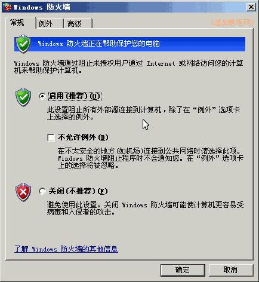
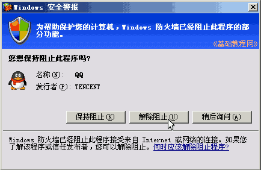
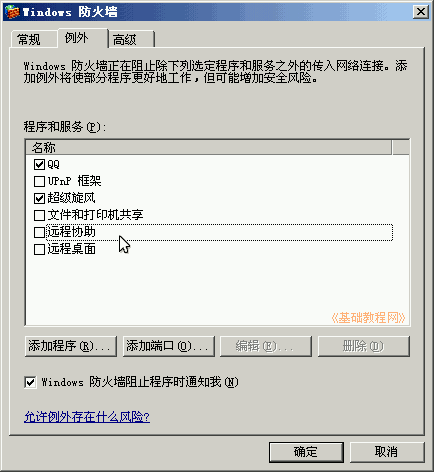

控制面板基础教程
作者：TeliuTe 来源：基础教程网
防火墙控制是否允许一个程序访问网络，可以预防木马程序，下面我们来看一个练习；
1、Windows 防火墙
1）进入经典视图，点第二个“Windows 防火墙”，出来一个面板；
2）出来的面板中，有三个标签，可以进行相应的设置；

2、设置选项
1）在“常规”标签里，可以设定启用、关闭和不允许例外，一般设为启用，如果关闭，会在任务栏右下角出现一个红色盾牌提示；
2）启用以后，一个程序首次访问网络时，会出来一个“安全警报”提示，正常使用的程序点“解除阻止”；

3）点“例外”标签，里面打勾的是允许访问网络的，注意关闭里面的“远程桌面”和“远程协助”；

4）还可以点添加端口，自己添加一些程序，如一些网络教室等，
“高级”标签里不用设置，看一下即可；
本节学习了Windows防火墙的基础知识，如果你成功地完成了练习，请继续学习下一课内容；
本教程由86团学校TeliuTe制作|著作权所有
基础教程网：http://teliute.org/
美丽的校园……
转载和引用本站内容，请保留版权信息和本站链接。